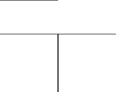
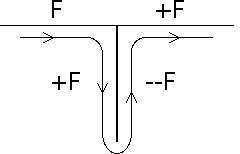
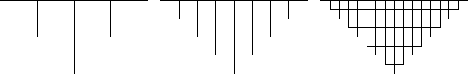

For the inverse problem, suppose the axiom and first step of an L-System are
|  |
Looking at the picture, we see the production rule is
F -> F + F -- F + F.
|  |
Draw several more steps and make a guess at the limiting shape.
|  |
With the rescaling convention, the limiting shape will be a filled-in right isosceles triangle.
Return to L-Systems: Patterns with Grammar